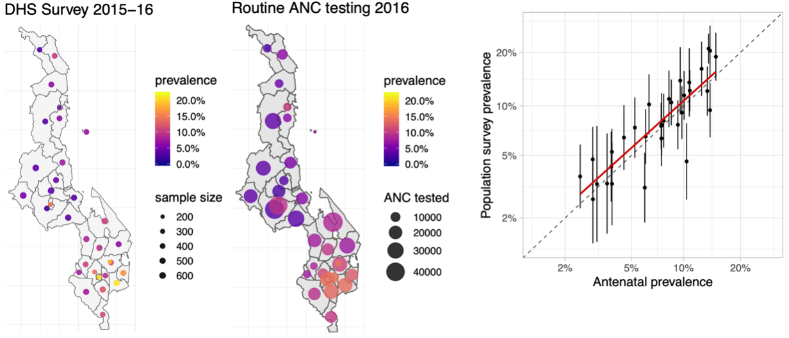

Research Agenda for the next 3-5 years
April 30, 2025
Building on my previous research and work experiences in population health, social statistics, and demography, my proposed research program is to:
Background
5 million of people die from poor‑quality care every year worldwide
Variations in access to quality healthcare quality are ~ between and within countries
Health Facility Surveys
In many low resource settings, routine health information systems are lacking or incomplete
Information about access and quality of care comes from surveys
Modelling Facility Readiness
Facility surveys can be inconsistent and are not powered to produce estimates at subnational level
Hierarchical models can (i) account for differences between surveys using different design between, and (ii) use space-time correlation and covariates to produce estimates at subnational level
I developed a spatio-temporal model using a two-step estimation process (Allorant, 2023, Nat. Comm.)
Future work: Developing a unit-level model, where quality metrics are modelled at the facility-level

Hypothesis: with mass consumption, asset ownership is no longer strongly dependent on SES
Objective: To understand how AI is reshaping official statistics production
Key Definitions:
Official Statistics: data and indicators produced by National Statistical Offices
AI and Machine Learning: Data-driven algorithms and predictive models that can automate or enhance statistical processes
STS (Science and Technology Studies): Interdisciplinary field that examines how science, technology, and society co-produce knowledge, norms, and institutions
Approach: A comprehensive comparative ethnography of National Statistical Offices
Aims:
Funding: UKRI Metascience
Step 1: Direct estimate of coverage of indicator \(l\) in area \(j\) at time \(t\) from survey \(s\) is the weighted average of coverage across health facilities \(i\) in area \(j\)
\[ \begin{aligned} \widehat{p^{l}_{jts}} = \frac{\sum_{i \in S_j} w_{ijs} y^{l}_{ijs}}{\sum_{i \in S_j} w_{ijs}} \end{aligned} \]
Step 2: Area-level readiness direct estimates modelled as a function of space-time covariates, and survey effects:
\[ \begin{aligned} \theta^{l}_{jts} & = \alpha + \underbrace{X_{jt}}_{\text{Covariates}} \boldsymbol{\beta} + \overbrace{e_j + S_j}^{\text{Spatial effects}} +\\ & \overbrace{\tau_t + \gamma_t}^{\text{Temporal effects}} + \overbrace{\delta_{jt}}^{\text{Space-time interaction}} + \overbrace{\nu_s}^{\text{Survey effect}} \end{aligned} \]
Department-level survey and model estimates for process quality metrics
Complex survey design acknowledged by including strata as covariates
Stronger spatial correlation may exist at smaller spatial scales
\[ \begin{aligned} Y(\mathbf{s}_i) &\sim \text{Ber}(p(\mathbf{s}_i))\\ \text{logit}^{-1}\left(p(\mathbf{s}_i)\right) &= \alpha + \underbrace{\mathbf{X}(\mathbf{s}_i)\beta}_{\text{Spatial Covariates}} + \overbrace{z_i \gamma}^{\text{Strata}} + \epsilon_{i} + S(s_i) \end{aligned} \] where: